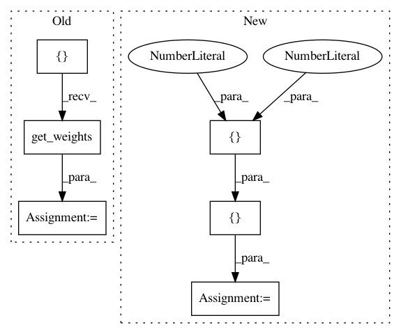

afd954e65f15aea4d438d0a219136fc4a63a573d,tensorflow/python/keras/layers/preprocessing/normalization_test.py,NormalizationTest,test_broadcasting_during_direct_setting_with_tensors,#NormalizationTest#,126
Before Change
layer = normalization.Normalization(
axis=-1,
mean=constant_op.constant([1.0]),
variance=constant_op.constant([2.0]))
layer.build((None, 2))
weights = layer.get_weights()
self.assertAllClose([1.0, 1.0], weights[0])
self.assertAllClose([2.0, 2.0], weights[1])
def test_broadcasting_during_direct_setting_with_variables_fails(self):
After Change
axis=-1,
mean=constant_op.constant([1.0]),
variance=constant_op.constant([1.0]))
output = layer(np.array([[1., 2.]]))
expected_output = [[0., 1.]]
self.assertAllClose(output, expected_output)
self.assertAllClose(layer.get_weights(), [])
In pattern: SUPERPATTERN
Frequency: 3
Non-data size: 6
Instances
Project Name: tensorflow/tensorflow
Commit Name: afd954e65f15aea4d438d0a219136fc4a63a573d
Time: 2021-05-04
Author: mattdangerw@google.com
File Name: tensorflow/python/keras/layers/preprocessing/normalization_test.py
Class Name: NormalizationTest
Method Name: test_broadcasting_during_direct_setting_with_tensors
Project Name: philipperemy/keras-tcn
Commit Name: 0cfe82c6beb9a28a5ff7da81b86fa0e93c388f14
Time: 2019-11-20
Author: premy@cogent.co.jp
File Name: tasks/save_reload_model.py
Class Name:
Method Name:
Project Name: tensorflow/tensorflow
Commit Name: afd954e65f15aea4d438d0a219136fc4a63a573d
Time: 2021-05-04
Author: mattdangerw@google.com
File Name: tensorflow/python/keras/layers/preprocessing/normalization_test.py
Class Name: NormalizationTest
Method Name: test_broadcasting_during_direct_setting